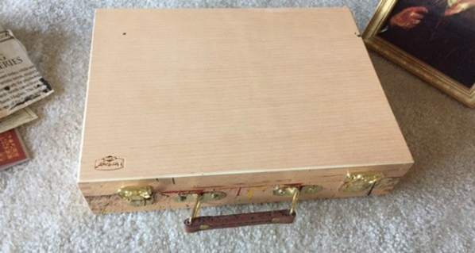
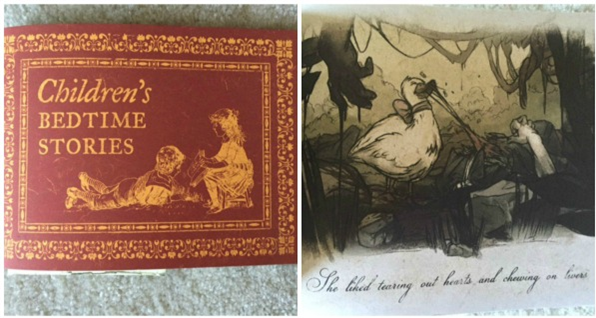
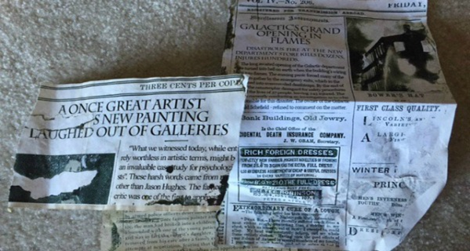
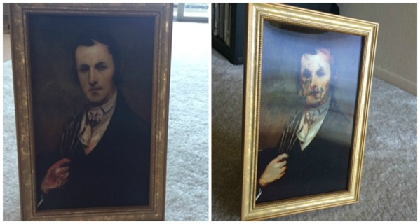
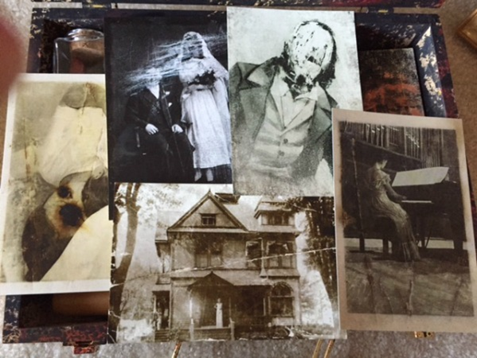
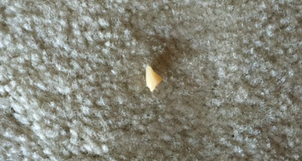
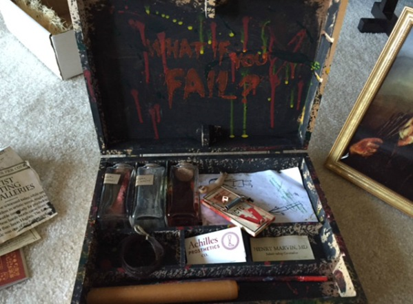

Layers of Fear is a first-person psychedelic horror game with a heavy focus on story and exploration. Players take control of a painter whose sole purpose is to finish his Magnum Opus.
The next thing that immediately catches my eye is a small, red book titled, “Children’s Bedtime Stories.” And let’s just say these stories are anything but children-friendly. And tucked inside the book is another piece of dyed, folded paper. It looks very much like the notes you find hidden inside Layers Of Fear. The note is from an agent for the publishing house that published the children’s book and he expresses concern and anger as he yells at the author for creating such horrible work. In the game, if you’re thorough enough, you come across a note from the main character’s agent who pretty much tells him the same thing about his paintings.
Next in the paint box, there is a collection of what seems like old newspaper articles which actually elaborate the story. One story explains that the “widower” broke into a child care center and kidnapped his daughter, which is the baby that is referenced throughout the entire game. Another article is about the fire in the department store that killed the main protagonist’s wife. And the last article hints at the dwindling sanity of the main character, describing how his paintings were getting laughed out of galleries. For me, this is a great addition to the game experience and now I kind of understand more about the narrative.
One of the main pieces of this pile of promotional materials was the picture frame. Like many haunted picture frames that come out around Halloween, the picture changes when you turn it from side to side. At one angle, the picture looks like a normal man, but from another angle the man looks bloody and decaying with part of his skull showing.
In the compartments of the box, that’s where things start to get really weird. In one bottle, there’s what seems to be a piece of flesh, labeled “Not just any canvas.” In the game, you finds pieces of his “canvas” which are pieces of the human body. Another jar has a small bone in it covered in what looks like ash, and it’s labeled “undercoat, bone white.” The last jar has a bloody finger in it, yet another piece of the human canvas from the game. The most chilling piece, I think, was the piece of flesh because it was hard to see exactly what it was, which made the imagination run rampant.
That’s when I spotted something off underneath the jars, something I didn’t expect to see. A note? I pulled it out, my heart thumping a little wondering how many others had seen this note. It was a drawing of a prosthetic leg with negative comments surrounding it like “Why the damn leg!?” and “Can’t afford a new one.” And it looked like there were mug stains on it from some kind of drink. Totally haunting and really cool.
Other things in the kit includes old, dried out paintbrushes, a pack of real matches from the company that made the main protagonist’s prosthetic leg, Achilles Prosthetics Co., an aged business card for a relationship counselor, an orange candle, a mouse trap and a doll’s arm. What’s creepy is the candle’s wick has definitely been used and has little wax dribbles on the side. The mousetrap is a reference to the mice running around in the game that sort of led you through the maze of the main protagonist’s house.
Maybe the most horrifying thing was as I was sifting through the stuff in the kit, I noticed something on the ground by my leg. It looked like a piece of food. I thought it had just been dropped by someone. But when I picked it up, I noticed it wasn’t food at all. It was a flipping tooth. I jumped and tossed it back into the kit.
I may not have enjoyed Layers Of Fear as much as I wanted to, but these promotional materials are some of the most terrifying things I’ve ever come across. They add such a level of depth to the game and the story, something I felt was absent in the actual game. Suddenly I have such an understanding of what happened and why the characters were so messed up. So even if I did receive these materials late, I’m happy that I did. I only wish every horror game developer marketed their game in this manner—it’s total genius.
